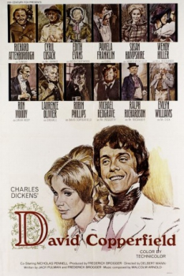
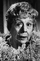

Country:United States, 118 minutes
Spoken languages:
Genres:Drama, Sci-Fi
Director(s):Delbert Mann
Writer(s):Charles Dickens, Jack Pulman
Video Codec:Unknown
Number: 1630


Certification:
Storyline:
A made for TV movie of the Charles Dickens' classic novel, turns Dickens' picaresque tale into an extended flashback, with David Copperfield Robin Phillips as a young man, brooding on a deserted beach, recalling his youth. The characters are all trotted out in choppy flashbacks as David remembers his life as a young orphan, brought to London and passed around from relatives, to guardians, to boarding school.
Cast: 
Medium: Original DVD,
Comments: w/ The Man With The Golden Arm & D.O.A.
Loaned: No
Aspect ratio: Unknown